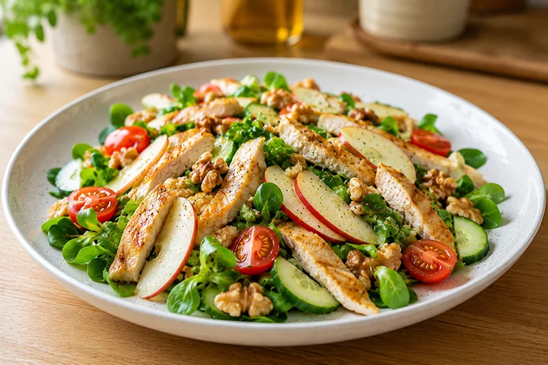

Receta saludable
Ensalada de pollo y manzana
La ensalada de pollo y manzana combina verduras frescas, fruta y proteínas en un plato ligero y equilibrado. Una receta fácil de preparar, perfecta para los días más cálidos.
Ingredientes
- 200 g de pechuga de pollo a la plancha
- 100 g de canónigos
- 1 manzana
- 100 g de tomates cherry
- 1/2 pepino
- 15 g de nueces
- 1 cucharada de aceite de oliva virgen extra
- 1 cucharada de vinagre de manzana
- Pimienta negra al gusto
- Sal al gusto
Preparación
- Cocina la pechuga de pollo a la plancha y déjala templar antes de cortarla en tiras.
- Lava los canónigos, los tomates y el pepino.
- Corta la manzana en láminas finas y el pepino en rodajas.
- Parte los tomates cherry por la mitad.
- Coloca todos los ingredientes en una ensaladera.
- Añade las nueces troceadas.
- Aliña con el aceite de oliva, el vinagre, la sal y la pimienta.
- Mezcla suavemente y sirve.
Consejo práctico
Añade la manzana justo antes de servir o rocíala con unas gotas de limón para evitar que se oxide y mantener su textura crujiente.